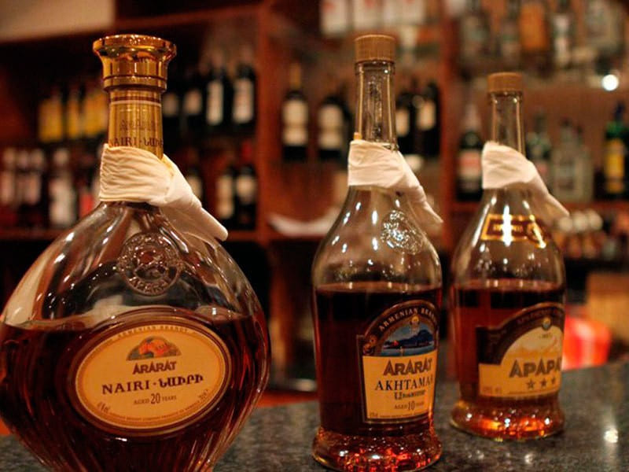

Армянский коньяк «Арарат» — тепло традиций в Туле
Почему выбирают «Арарат»
В нашем кафе «Барашкина радость» армянский коньяк «Арарат» — это не просто напиток, а часть семейных традиций и особых встреч. Его мягкий вкус, янтарный цвет и тонкий аромат создают атмосферу уюта и доверия за столом. Такой коньяк особенно ценят в Туле те, кто любит настоящие армянские напитки и душевные вечера.
История и гордость Армении
«Арарат» — напиток с историей более 130 лет, который стал символом гостеприимства и высокого качества. Его подают на праздниках, семейных ужинах и просто для хорошего настроения.
Калорийность и подача
В 100 мл коньяка — примерно 225 ккал. Мы подаём «Арарат» в правильных бокалах, чтобы вы могли почувствовать весь букет вкуса и аромата.
Как рождается вкус
- Для коньяка используют лучшие сорта винограда, чистую воду и выдержку в дубовых бочках.
- Созревание занимает от 3 до 20 лет — всё ради насыщенного вкуса и мягкости.
- Подаём при комнатной температуре, чтобы раскрыть все оттенки напитка.
Приходите в «Барашкину радость» в Туле — попробуйте армянский коньяк в уютной атмосфере или закажите к семейному ужину.
← Назад к меню